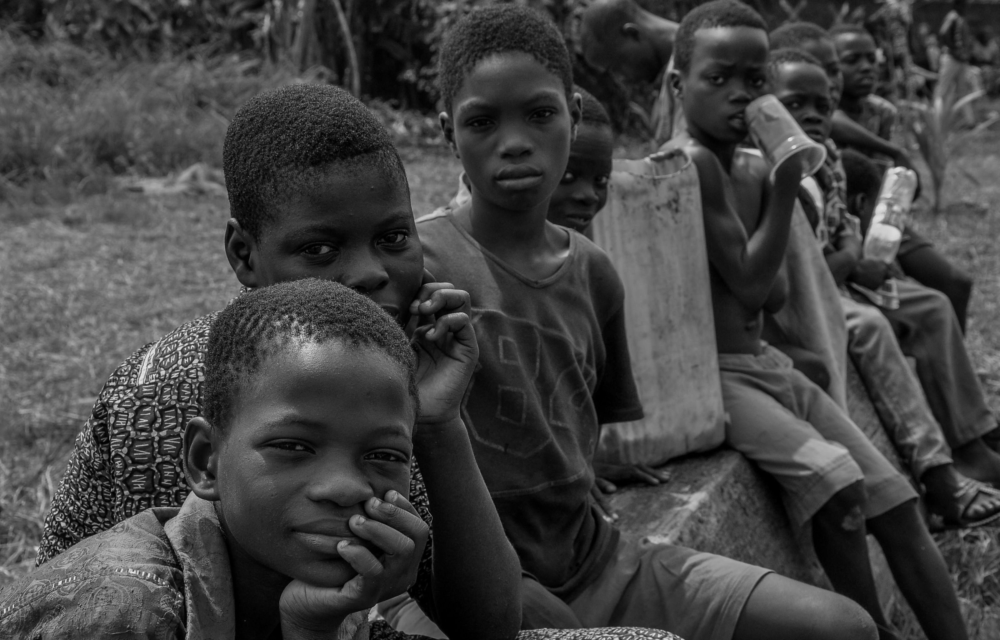
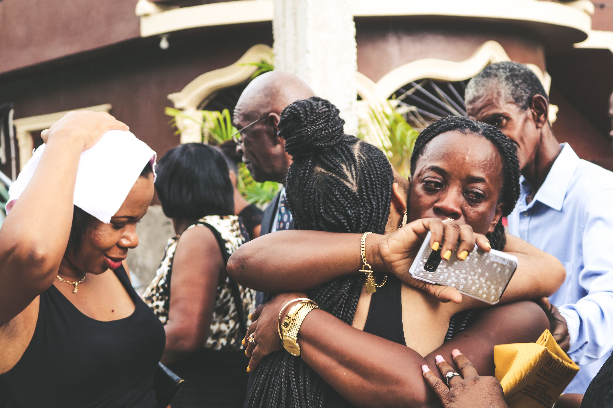
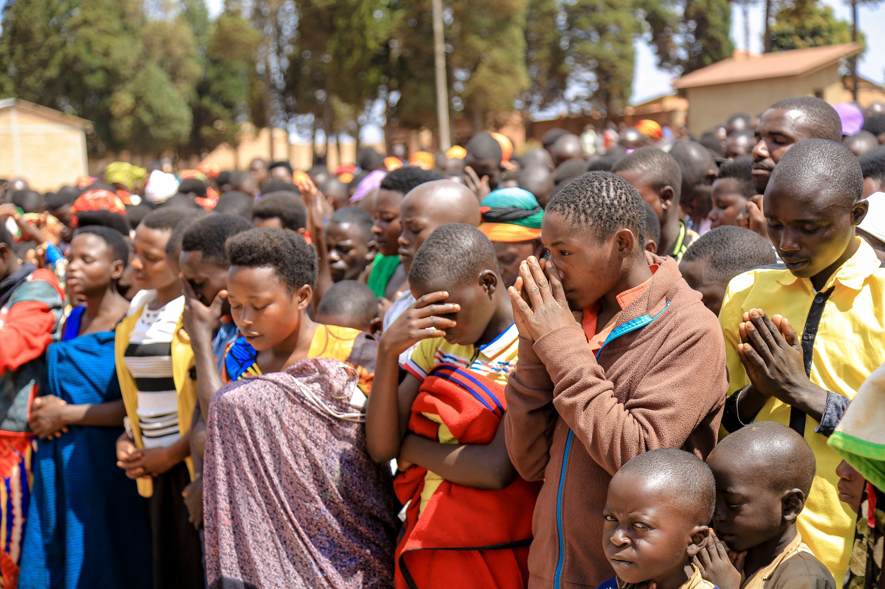
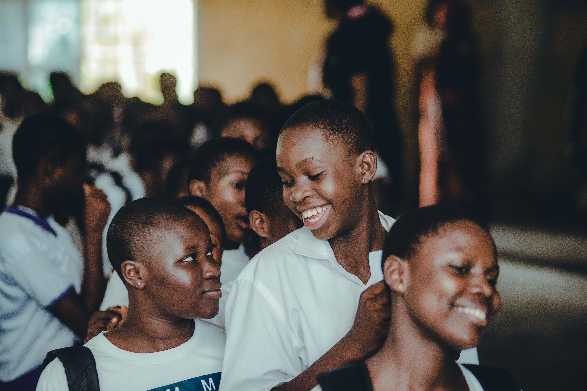
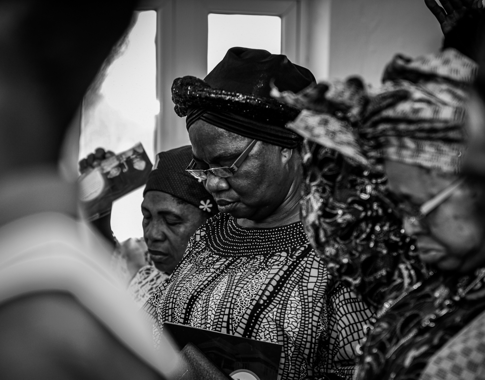

01
Repérer et soutenir
Nous identifions les besoins prioritaires et mobilisons les ressources pour soutenir les familles et les initiatives locales.
Communauté de prière et de réconciliation
Prier - Guérir - Vivre Ensemble
NOUS REJOINDRELa région des Grands Lacs réunit des communautés liées par l’histoire, les échanges et la foi. Elle fait aussi face à des défis sociaux et humanitaires qui rendent l’écoute, le dialogue et l’entraide essentiels.
Le Cénacle de Paix crée des occasions de se retrouver, de prier et d’agir ensemble. Notre ambition : faire grandir la confiance et soutenir une réconciliation vécue au quotidien.
Découvrir nos rencontresÀ travers la prière, l’écoute et l’action concrète, nous répondons aux besoins de la vie quotidienne et à la mission de réconciliation de l’Église.

Nous identifions les besoins prioritaires et mobilisons les ressources pour soutenir les familles et les initiatives locales.

Nous offrons un accompagnement spirituel, pastoral et émotionnel pour aider chacun à retrouver l’espérance et le soutien.

Nous formons, animons et éclairons les jeunes et les familles à travers la parole de Dieu et des réflexions pratiques.

Nous créons des opportunités de vie dignes en soutenant des projets, des compétences et des initiatives de développement.
Dans une région traversée par des réalités et des histoires diverses, nous voulons ouvrir des espaces où chacun peut être écouté, retrouver des liens et prendre part à un avenir commun.
Rassembler les communautés autour d’une espérance commune.
Accueillir les expériences et les besoins de chacun.
Favoriser la compréhension au-delà des différences.
Encourager l’entraide et les initiatives de proximité.
